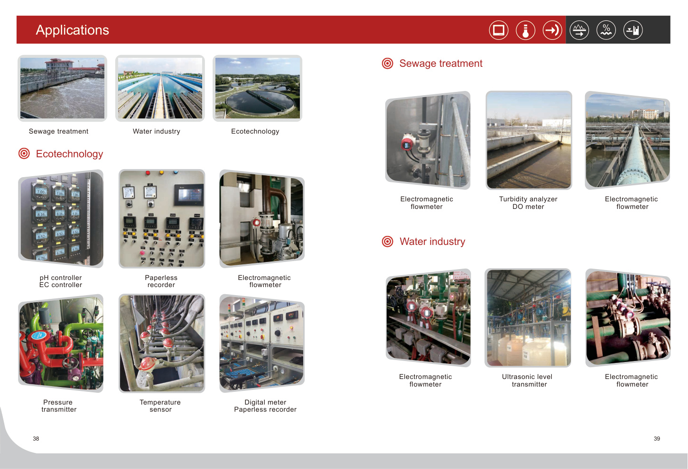
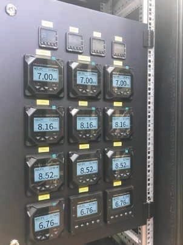
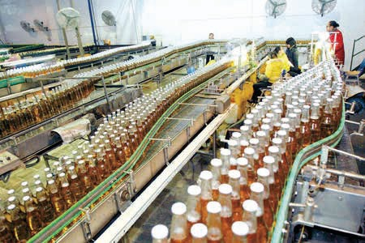

The supplied manual references water industry, sewage treatment, environmental protection, petroleum, chemical, metallurgical, pharmaceutical, food, paper and equipment-related applications.

Water Industry
Sewage Treatment
Food & Light IndustryLevel and flow measurement can support tanks, secondary sedimentation tanks and sewage treatment applications shown in the manual.
Explore level products →The manual references petroleum, chemical, metallurgical and other industrial fields for measurement products.
Explore flow products →Temperature sensing and signal isolation products can be positioned for control systems and equipment applications.
Explore temperature →Send the medium, tank or pipe size, range, temperature, connection, output and quantity. Use the RFQ form to start the technical conversation.